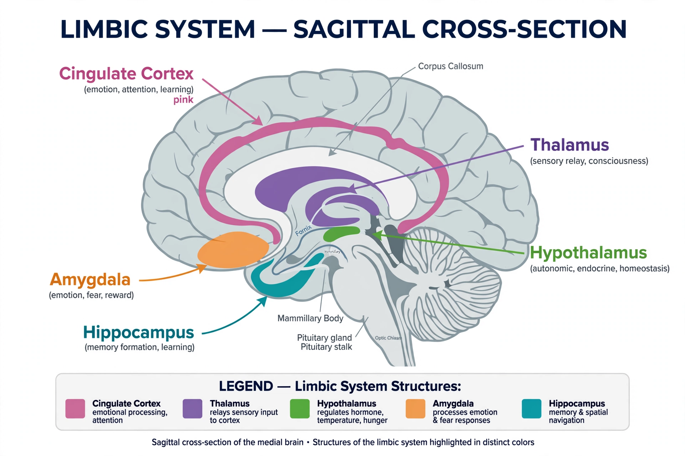

Complex set of brain structures involved in emotion, motivation, memory and olfaction.
The limbic system, also known as the paleomammalian cortex, is a set of brain structures located on both sides of the thalamus, immediately beneath the medial temporal lobe of the cerebrum. It supports emotion, behaviour, motivation, long-term memory, and smell.
Structures commonly included are the amygdala, hippocampus, thalamus, hypothalamus, cingulate cortex, fornix, mammillary bodies, and olfactory bulbs. The hippocampus is central to forming new memories; the amygdala processes emotional responses, especially fear.
Paul Broca named the limbic lobe in 1878; James Papez proposed the Papez circuit in 1937, and Paul MacLean developed the concept of the limbic system and triune brain in the 1950s–1960s. Modern neuroscience debates whether it forms a coherent single system, but the term remains widely used.
Through connections with the autonomic nervous system and endocrine system the limbic system influences fight-or-flight responses, feeding, reproduction, and care of young. Dysfunction is implicated in anxiety, depression, epilepsy, and schizophrenia.